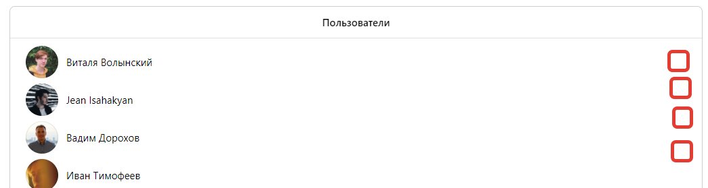

(Доступны у пользователя с соответствующей отметкой в базе).
Вверху поле для поиска (Имя, фамилия и айди). Параметры будут передаваться в Json формате
VK UI: Blocks -> Search

Список идёт сверху вниз. Отображается аватарка, имя и фамилия. Под именем и фамилией будет ссылка на профиль (переход на страницу по нажатию).
VK UI: Blocks -> PullToRefresh
Рядом кнопка действий. Открывает модельное окно (через функцию) в котором видны балансы пользователя. И кнопки действий: Заблокировать/разблокировать, выдать/ забрать деньги со счёта